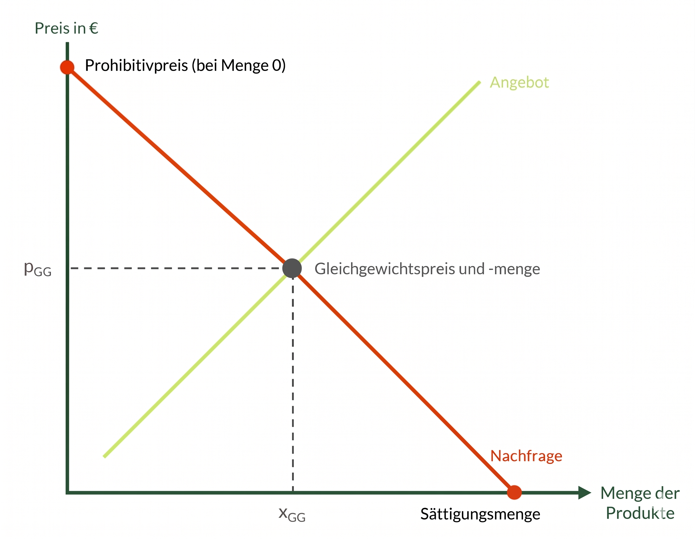
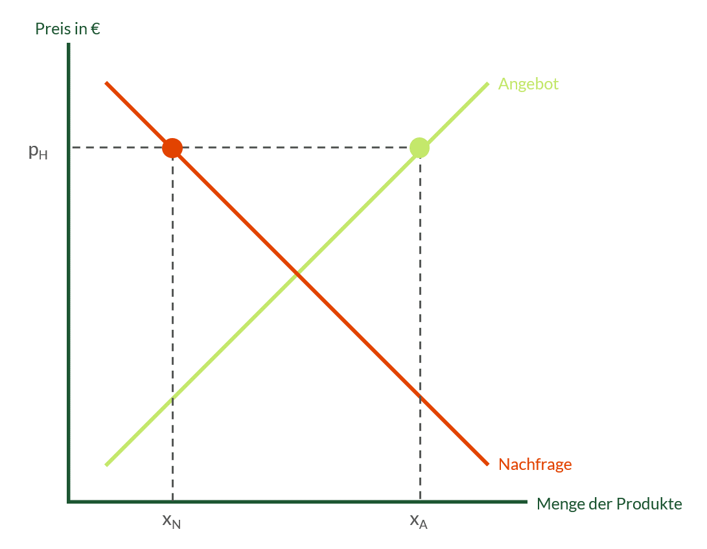
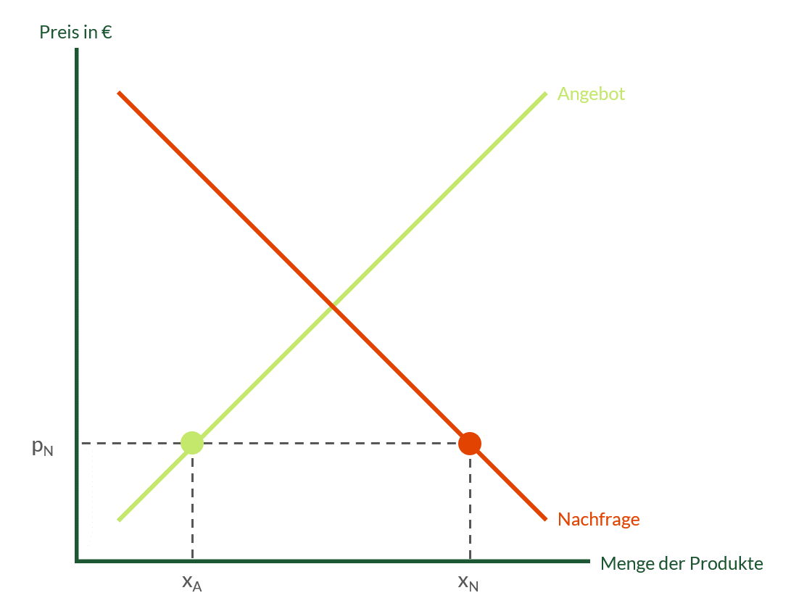

📊 Marktformen, Preisbildung & Shareholder
Umfassende Übersicht über Märkte, Elastizität und Interessengruppen im Unternehmen.
1. Der vollkommene Markt & Güterarten
Das Modell von Angebot und Nachfrage geht theoretisch von einem vollkommenen Markt aus. Er hat folgende Prämissen:
- Viele Anbieter und Nachfrager (Polypol).
- Homogene Güter: Es gibt keine Unterschiede zwischen den Produkten.
- Vollständige Markttransparenz.
- Keine Präferenzen (weder persönlich, räumlich noch zeitlich).
- Unendliche Reaktionsgeschwindigkeit & Rationales Verhalten.
- Keine Zutrittsbeschränkungen zum Markt.
Arten von Gütern
Güter, die durch andere ersetzt werden können (z.B. Döner und Burger).
Güter, die sich gegenseitig zwingend ergänzen (z.B. Burger und Pommes).
Güter, bei denen die Nachfrage steigt, wenn das Einkommen steigt (z.B. Bio-Produkte).
Güter, bei denen die Nachfrage sinkt, wenn das Einkommen steigt (z.B. "ja!"-Eigenmarken).
2. Bestimmungsfaktoren für Angebot und Nachfrage
Wovon hängt das Angebot ab?
- Zielgruppe
- Verfügbarkeit der Ressourcen
- Standort
- Nachfrage der Kunden
- Erzielbare Preise & eigene Kosten
Wovon hängt die Nachfrage ab?
- Einkommen des Konsumenten
- Verwendungszweck
- Qualität des Guts
- Kosten / Preis
- Verfügbarkeit
3. Die 5 relevanten Marktformen
Märkte unterscheiden sich durch die Anzahl der Anbieter und Nachfrager. Daraus ergibt sich die Preisbestimmungsmacht und die Wettbewerbssituation.
| Fachbegriff | Anbieter | Nachfrager | Eigenschaften & Marktmerkmale | Beispiele |
|---|---|---|---|---|
| Polypol | Viele | Viele | Kein einzelner kann den Preis bestimmen. Preis muss als gegeben hingenommen werden. | Eisverkauf, Gemüsehändler, Aktienmarkt |
| Angebotsoligopol | Wenige | Viele | Gegenseitige Abhängigkeit. Gefahr der Kartellbildung (Preisabsprachen). Hoher Preiskampf. | Automobilindustrie, Mobilfunkanbieter, Mineralölgesellschaften |
| Nachfrageoligopol | Viele | Wenige | Die wenigen Nachfrager haben eine starke Marktmacht und können die Preise der Anbieter drücken. | Viele Winzer stehen wenigen großen Keltereien gegenüber |
| Angebotsmonopol | Einer | Viele | Keine Konkurrenz. Volle Preisbestimmungsmacht. Hohe Gewinne möglich. | Deutsche Post (Briefe bis 2007), Microsoft (früher), patentierte Erfindung |
| Nachfragemonopol | Viele | Einer | Der einzige Nachfrager diktiert die Bedingungen für die vielen Anbieter. | Kriegsschiffe werden in Deutschland nur von der Bundesmarine gekauft |
Marktgleichgewicht & Kennzahlen
Der Preis bildet sich im Schnittpunkt von Angebots- und Nachfragekurve (Gleichgewichtspreis).

- Prohibitivpreis: Der Preis, bei dem die nachgefragte Menge exakt 0 ist (zu teuer, niemand kauft es).
- Sättigungsmenge: Gibt die Menge bei einem Preis von p = 0 an. Der Bedarf ist komplett gedeckt.
Marktungleichgewicht
Angebotsüberhang (Angebot > Nachfrage)
Es wird mehr angeboten als gekauft. Käufer haben die Macht (Käufermarkt). Der Preis muss sinken.

Nachfrageüberhang (Nachfrage > Angebot)
Mehr Leute wollen kaufen, als Produkte da sind. Verkäufer haben die Macht (Verkäufermarkt). Der Preis muss steigen.

Verschiebung der Angebotskurve
Verschiebung nach Rechts $\rightarrow$
Ursache: Gesunkene Kosten (Rohstoffe billiger), höhere Produktion.
Folge: Menge steigt, Gleichgewichtspreis sinkt.
Verschiebung nach Links $\leftarrow$
Ursache: Gestiegene Kosten, Produktionsausfälle, Krisen.
Folge: Menge sinkt, Gleichgewichtspreis steigt.
Preiselastizität der Nachfrage & Umsatz
Die Elastizität beschreibt, wie stark sich die nachgefragte Menge ändert, wenn sich der Preis ändert.
Kleine Preisänderung = große Mengenänderung.
- Merkmale: Nicht lebensnotwendig, viele Alternativen (Streaming).
- Effekt bei Preiserhöhung: Kunden springen ab. Der Gesamtumsatz sinkt massiv.
Große Preisänderung = kaum eine Mengenänderung.
- Merkmale: Notwendige Güter, kaum Alternativen (Medikamente, IT-Security).
- Effekt bei Preiserhöhung: Kunden müssen kaufen. Der Gesamtumsatz steigt.
Grundlagen: Warum schließen sich Unternehmen zusammen?
Unternehmen vernetzen sich wirtschaftlich aus verschiedenen Gründen. Zu den Hauptmotiven zählen die Erhöhung der Wirtschaftlichkeit, die Verbesserung der Konkurrenzfähigkeit sowie Kostensenkungen durch gemeinsame Forschung oder Rationalisierung[cite: 5]. Das oberste Ziel ist dabei meist die Gewinnmaximierung[cite: 5].
Für den Markt und die Konsumenten bringen Zusammenschlüsse oft Probleme mit sich: Der Wettbewerb kann beschränkt oder ausgeschaltet werden, was zu überhöhten Preisen, Angebotsverknappung oder dem Missbrauch von wirtschaftlicher Macht führt[cite: 5].
Der Unterschied: Kooperation vs. Konzentration
🤝 Kooperation (Zusammenarbeit)
- Die Unternehmen arbeiten vertraglich zusammen[cite: 5].
- Sie geben ihre wirtschaftliche Selbstständigkeit nur teilweise auf[cite: 5].
- Die rechtliche Selbstständigkeit bleibt völlig unangetastet[cite: 5].
- Beispiele: Kartelle, Arbeits- oder Interessengemeinschaften, Verbände[cite: 5].
🔗 Konzentration (Zusammenschluss)
- Die Unternehmen unterwerfen sich einer einheitlichen Leitung[cite: 5].
- Die wirtschaftliche Selbstständigkeit geht verloren, oft auch die rechtliche[cite: 5].
- Erfolgt meist durch Kapitalbeteiligung (Aktien) oder Übernahme[cite: 5].
- Beispiele: Konzern, Trust (Fusion)[cite: 5].
Das Kartell (Form der Kooperation)
Ein Kartell entsteht durch vertragliche Abmachungen von Unternehmen der gleichen Branche, um den Wettbewerb untereinander auszuschließen oder einzuschränken[cite: 5]. Die Unternehmen bleiben rechtlich selbstständig[cite: 5].
Die Gesetzeslage:
Da Kartelle Verbraucher benachteiligen, verbietet das Kartellgesetz (GWB) sie grundsätzlich[cite: 5]. Verboten sind beispielsweise:
- Preiskartelle: Unternehmen sprechen Preise heimlich ab[cite: 5].
- Quotenkartelle: Jedem wird eine exakte Produktionsmenge zugeteilt[cite: 5].
- Gebietskartelle: Aufteilung von Absatzgebieten ("Du verkaufst im Norden, ich im Süden")[cite: 5].
Erlaubte Ausnahmen:
Ausnahmen gibt es z.B. bei kleinen Marktanteilen ("Bagatellgrenze") oder bei Mittelstandskartellen. Kleine und mittlere Unternehmen dürfen zusammenarbeiten, wenn es der Rationalisierung dient und den Wettbewerb nicht wesentlich stört[cite: 5].
Konzern & Trust (Konzentration)
Der Konzern:
Rechtlich selbstständige Firmen werden unter einer Leitung wirtschaftlich zusammengefasst, meist durch Kapitalbeteiligungen (z.B. ein Unternehmen kauft die Aktienmehrheit eines anderen)[cite: 5].
- Muttergesellschaft: Das herrschende Unternehmen[cite: 5].
- Tochtergesellschaft: Das abhängige Unternehmen[cite: 5].
- Holding: Eine reine Dachgesellschaft, die selbst nicht produziert, sondern nur verwaltet[cite: 5].
Arten von Konzernen: Horizontal (Gleiche Produktionsstufe, z.B. Brauerei + Brauerei), Vertikal (Aufeinanderfolgend, z.B. Erzgrube + Stahlwerk) und Anorganisch (Völlig verschiedene Branchen zur Risikostreuung)[cite: 5].
Der Trust (Fusion):
Die stärkste Form. Hier verlieren die Firmen auch ihre rechtliche Selbstständigkeit[cite: 5]. Entweder wird ein Unternehmen komplett von einem anderen "aufgenommen" oder beide verschmelzen in einer völligen "Neugründung"[cite: 5].
Shareholder geben Kapital — Stakeholder haben Interessen!
💼 Shareholder
Personen, die Kapital investieren und am Unternehmen beteiligt sind.
- Wer? Eigentümer, Aktionäre, Gesellschafter.
- Ziele: Hoher Gewinn, Rendite, Kosten minimieren, Aktienkurs steigern.
🌍 Stakeholder
Alle Gruppen, die ein Interesse am Unternehmen haben oder davon betroffen sind.
- Wer? Mitarbeitende, Kunden, Lieferanten, Staat.
- Ziele (Bsp): Sichere Jobs, gute Bezahlung, hohe Qualität, Steuergelder, Umweltschutz.
🎯 Unternehmensmaßnahmen bewerten (Zielkonflikte)
In Prüfungen musst du oft eine betriebliche Entscheidung aus beiden Perspektiven betrachten. Was für die Shareholder gut ist (Gewinn), ist oft für bestimmte Stakeholder (Mitarbeiter/Umwelt) schlecht – und umgekehrt. Das nennt man Interessen- oder Zielkonflikt.
| Maßnahme der Geschäftsführung | Sicht der Shareholder (Eigentümer) | Sicht der betroffenen Stakeholder |
|---|---|---|
| 1. Stellenabbau / Streichen von Überstundenvergütung | Positiv: Personalkosten sinken deutlich. Der Gewinn des Unternehmens steigt, was zu höheren Dividenden führt. | Negativ (Mitarbeiter): Arbeitsplatzverlust, Existenzängste, unbezahlte Mehrarbeit, schlechtes Betriebsklima. |
| 2. Investition in extrem teure, umweltfreundliche Filteranlagen | Negativ: Sehr hohe Anschaffungskosten belasten den Gewinn kurzfristig stark. Rendite sinkt. | Positiv (Gesellschaft & Staat): Weniger Emissionen, Schutz der Umwelt, Einhaltung von Gesetzen. |
| 3. Verwendung von billigeren, minderwertigeren Rohstoffen | Positiv: Materialkosten sinken, die Gewinnmarge pro Stück erhöht sich. | Negativ (Kunden): Die Qualität der Produkte leidet, Gefahr von Defekten steigt. |
| 4. Verlagerung der Produktion ins Ausland (Offshoring) | Positiv: Lohnkosten und Steuern im Ausland sind niedriger, Wettbewerbsfähigkeit und Gewinn steigen. | Negativ (Staat & Mitarbeiter in DE): Verlust von Steuereinnahmen, Verlust von Arbeitsplätzen im Heimatland. |
Prüfe dein Wissen (Der große Klausur-Test)
Dieser Test deckt alle klausurrelevanten Themen (Marktformen, Elastizität, Maßnahmenbewertung) ab.
Aufgabe 1: Angebots- und Nachfrageüberhang
Situation: Ein Händler verkauft Orangensaft. Das Marktgleichgewicht liegt bei 1,90€. Er senkt den Preis nun auf 1,70€ ab. Welcher Überhang entsteht und wer hat nun die stärkere Marktposition?
Aufgabe 2: Preiselastizität & Umsatz
Ein Unternehmen, das ein Monopol auf lebensrettende Medikamente hat, erhöht seine Preise drastisch. Wie nennt sich diese Elastizitätsform der Nachfrage und was passiert mit dem Gesamtumsatz des Unternehmens?
Aufgabe 3: Maßnahmen bewerten (Klausurtypisch!)
Ein mittelständisches IT-Systemhaus kündigt an, einen Großteil seines First-Level-Supports nach Indien auszulagern ("Offshoring"). Dadurch sollen 30% der Personalkosten eingespart werden.
Arbeitsauftrag: Bewerte diese Maßnahme ausführlich aus Sicht der Shareholder, aus Sicht der Belegschaft (Mitarbeiter in Deutschland) und aus Sicht der Kunden.
- Sicht der Shareholder (Eigentümer): Sie bewerten die Maßnahme sehr positiv. Durch die massiven Einsparungen bei den Personalkosten steigt der Gewinn des IT-Systemhauses. Dies führt zu höheren Renditen/Dividenden.
- Sicht der Belegschaft (Stakeholder): Sie bewerten die Maßnahme negativ. Die deutschen Support-Mitarbeiter müssen um ihre Arbeitsplätze fürchten, es drohen Kündigungen und das Betriebsklima verschlechtert sich aus Angst.
- Sicht der Kunden (Stakeholder): Sie bewerten die Maßnahme oft ebenfalls negativ. Sie könnten Sprachbarrieren, Qualitätsverluste im Support oder schlechtere Erreichbarkeiten durch Zeitverschiebungen befürchten.
Aufgabe 4: Rechenaufgabe Marktgleichgewicht
Gegeben: $x_N = 120 - 4p$ und $x_A = 20 + 2p$.
Berechne das Marktgleichgewicht (Preis $p$ und Menge $x$).
Angebot und Nachfrage gleichsetzen ($x_N = x_A$):
$120 - 4p = 20 + 2p \quad | +4p$
$120 = 20 + 6p \quad | -20$
$100 = 6p \quad | :6$
$p = 16,67$ (Gleichgewichtspreis)
Einsetzen in $x_A$:
$x_A = 20 + 2 \cdot 16,67$
$x = 53,34$ (Gleichgewichtsmenge)